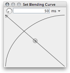
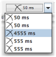

When the blending mode is activated (by clicking on the blending gadget or using keyboard B – the gadget turns yellow), most editing operations are carried out in a smooth way, by applying a user definable crossfade at the margins of the processed selection. Example: in a ten second sound file, you select the portion from 0:04 till 0:06 and hit Delete to remove it. You may end up with a click sound at the cutting point because of the sudden jump in the waveform that may occur. An effective means to get rid of these clicks is to make a softer cut. To do this, activate blending. Assume, you have selected a blending duration of 20 milliseconds. Now the before mentioned cutting operation will be carried out, such that a sound bit 0:05.990 till 0:06.000 (re original timeline) will be faded in at 0:04 (re target timeline) and a sound bit 0:04.000 till 0:04.010 (re original timeline) will be faded out at 0:04 (re target timeline), while still exactly the portion from 0:04 till 0:06 is cutted out. This means, you get a 20 millisecond crossfade at the cutting position.
Blending is applied for cut, delete, paste, insert-silence and all operations from the process menu. Blending is not applied in trim-to-selection.
The blending controls can be brought up in a separate window by doing a mouse Alt+Click over the blending gadget. Alternatively you can keep the mouse pressed over the gadget, and a context window will pop up. In this window, you can specify the blending (crossfade) time in milliseconds or samples and adjust the blending curve using two control points. Hint: if both control points are vertically centered, a linear crossfade is performed; if one control point is vertically centered and the other control point is at the top margin, an equal power crossfade is performed (with a crossing point of -3 dB). The equal power curve is often less audible when the crossfaded signal is not phase-correlated.
Note that the blending span gets automatically truncated, if the possible crossfade span is too small. Also note that blending may be undesired for many processes, notably when using fade-in and fade-out. The signal processing is not aware of this fact, so you may need to turn off blending temporarily in these cases.
Here is a screenshot of the blending window:
If you open the blending window in popup mode (keeping the mouse pressed over the combo box), you can terminate the window explictly by clicking on the "Close" button. In this case, the settings are stored in the blending history which can be accessed from the choice-button right to the blending gadget. Here you will find the five most recent settings:
